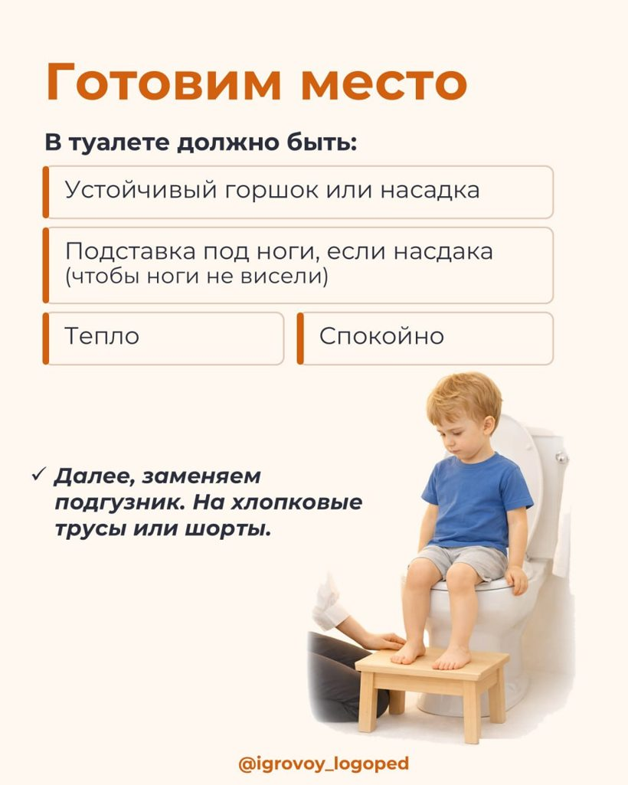
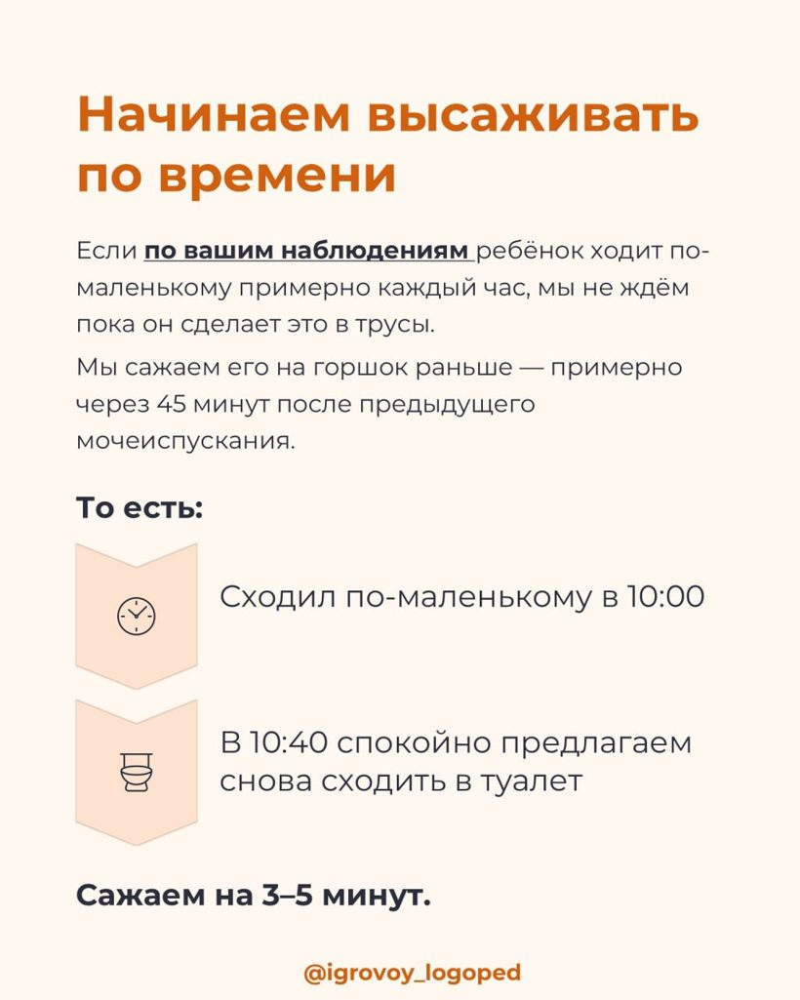

Начните с готовности, а не с даты рождения
Два года не гарантируют готовности. Присмотритесь к ребёнку: подгузник остаётся сухим по 1,5–2 часа, он понимает простые просьбы, показывает, что мокрый или хочет в туалет, интересуется горшком. Если признаков мало, подождите и пока подготовьте среду. Подробнее: «Когда приучать к горшку».
Мальчик или девочка: есть ли разница
В самом методе принципиальной разницы нет: и мальчикам, и девочкам нужны готовность, понятная среда и спокойная последовательность. Сроки у всех индивидуальны. Мальчику сначала проще осваивать горшок сидя, а вставать к унитазу можно позже.
Подготовка

- устойчивый горшок или накладка с подставкой для ног;
- лёгкая одежда: штанишки, которые ребёнок снимает сам или с небольшой помощью;
- одно постоянное место для горшка;
- 2–3 дня наблюдений без требований: когда ребёнок пьёт и когда ходит в туалет.
Первые дни: что делать
- Определите ритм. Сажайте на 3–5 минут в те моменты, когда ребёнок обычно ходит в туалет, например после питья или еды.
- Сохраняйте спокойствие. Без давления, уговоров и обещаний «пока не получится».
- Поощряйте сразу. Радуйтесь успеху, дайте небольшую понятную награду в ту же секунду.
- Реагируйте на промахи нейтрально. «Ничего, в следующий раз получится».
- Будьте последовательны. Одинаковые правила у мамы, папы, бабушки и в саду.

Если не получается
Остановитесь, снимите давление и вернитесь к наблюдению. Проверьте стул: запор или боль мешают навыку. Если ребёнок боится горшка, действуйте мягче: «Ребёнок не садится на горшок». Осторожнее с обещаниями «за 3 дня»: у каждого ребёнка свой темп.
Подробный пошаговый план с разбором кейсов собран в видеокурсе «Дефекация сидя», а для работы с конкретной ситуацией есть индивидуальное сопровождение.
Источники
- Choby B. A., George S. Toilet training. American Family Physician, 2008.
Вопросы и ответы
Нужно ли ловить момент и сажать каждые 15 минут?
Частые посадки утомляют. Лучше наблюдать за ритмом ребёнка и сажать в вероятные моменты, коротко и спокойно.
Ребёнок отказывается, но ему уже 2 года. Что делать?
Сделайте паузу и вернитесь к подготовке. Давление усиливает отказ.
Что делать ночью?
Ночное сухое состояние созревает позже и не зависит от дневного приучения. Не торопитесь убирать ночной подгузник.
Статья носит общий информационный характер, не заменяет консультацию специалиста и не ставит диагноз: диагноз ставит врач. Если вы тревожитесь за ребёнка, обратитесь к педиатру, неврологу или другому врачу.
Если нужен понятный план именно для вашего ребёнка, напишите мне: подберём формат работы.
Туалетный навык